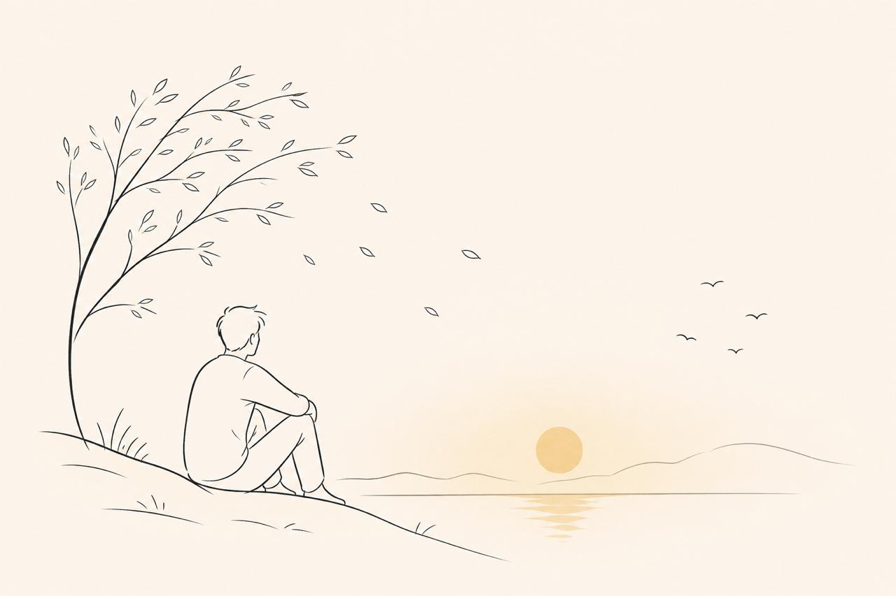
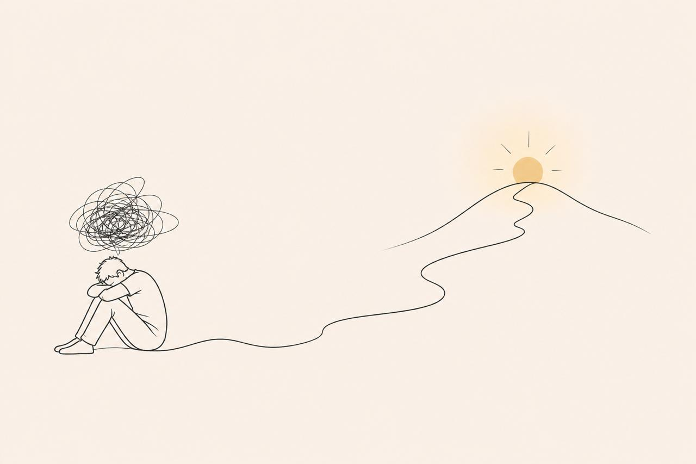
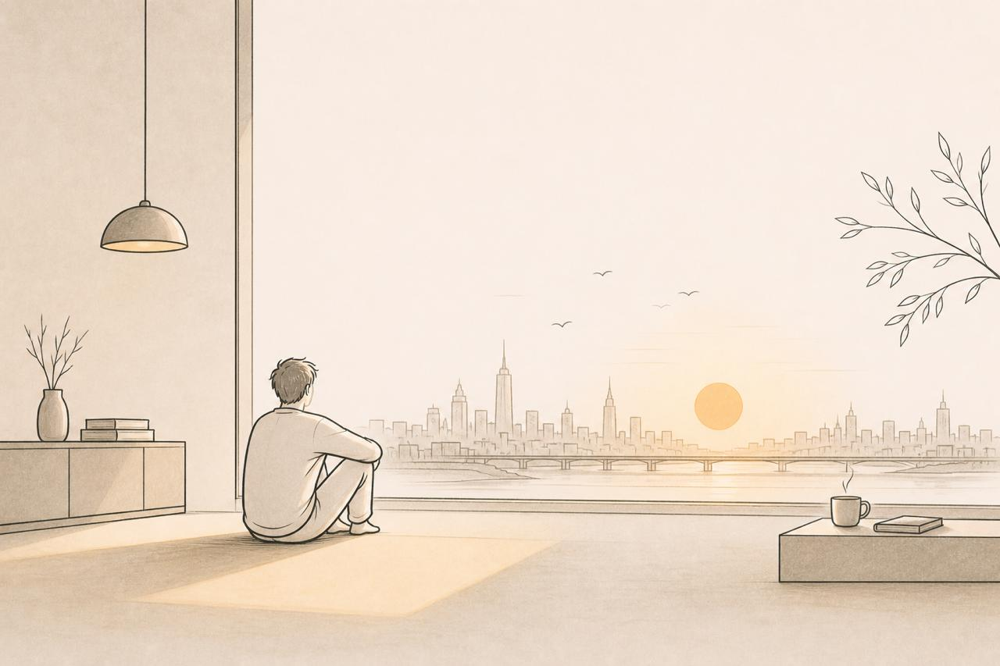
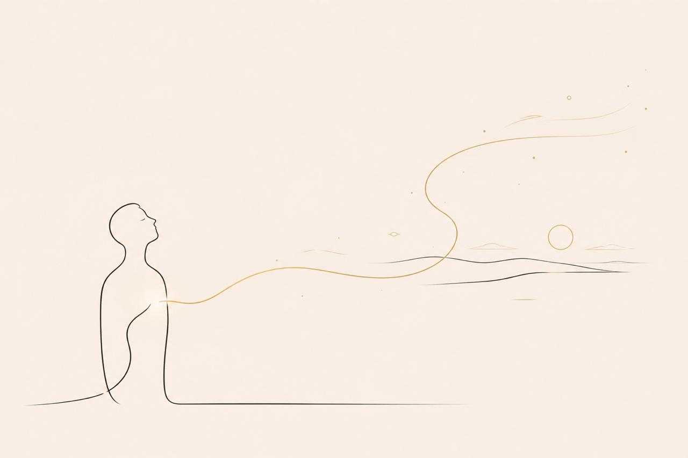
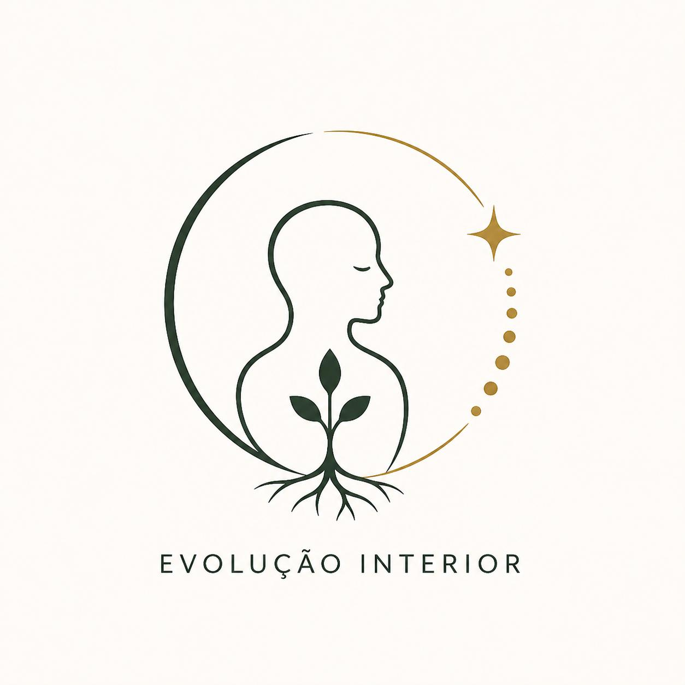
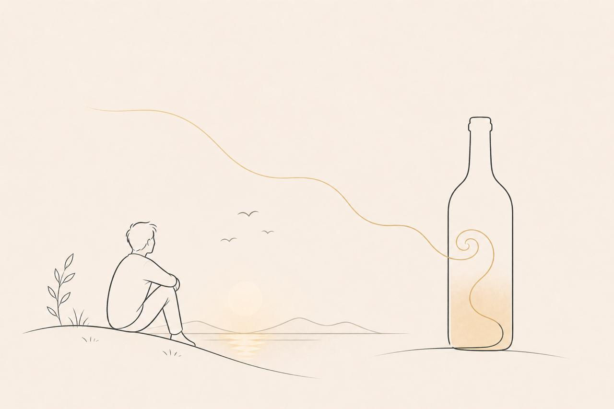
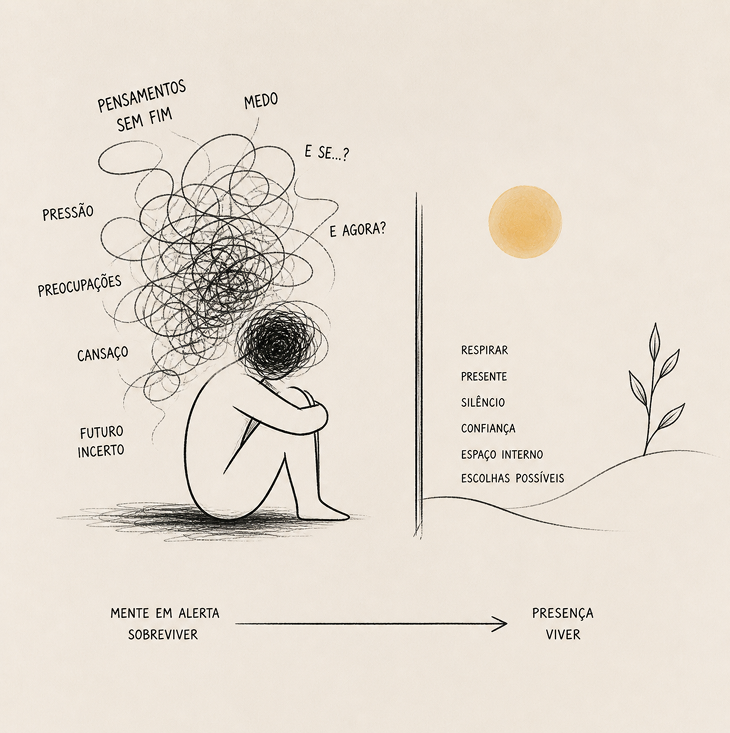

Artigos do Dr. Wilfredo
Pensamentos e reflexões sobre saúde mental, vida e bem-estar, escritos pelo próprio Dr. Wilfredo Finck Jr.

A Jornada Invisível da Evolução
Na existência, não há derrotas — há apenas etapas. Cada uma nos molda de maneira única, revelando-se não como sofrimento, mas como amadurecimento...

Depressão
Uma tristeza inexplicável, a melancolia da alma, uma sensação de vazio interior e desesperança. Muitos sofrem desnecessariamente por não buscarem ajuda...

O Tempo
O sorriso de hoje não volta mais! A boa conversa, os momentos com amigos e família são únicos. Devemos carregar menos e curtir mais...

Gratidão
Os valores da vida são pouco observados quando chegam de forma facilitada. A gratidão é a dádiva que nos proporciona felicidade e resistência...

A Reconquista do Valor Interno
O ser humano não nasceu para ser medido, mas para ser vivido. Houve um tempo em que a existência era direta: o corpo sentia o frio e a roupa era abrigo...
A Arte de Contemplar
Você não está cansado — está desconectado. Contemplar não é só olhar. É parar. É sair, por um instante, da pressa e da lógica do dia a dia...

O que sustenta uma vida em comum
Amor, humildade e perdão. Mais do que virtudes, são fundamentos silenciosos da vida em comum. Sustentam aquilo que não aparece, mas determina a qualidade...
Alcoolismo: Quando o Alívio Vira Dependência
Raramente o álcool entra na vida de alguém como problema. Ele chega como resposta — não como prazer, mas como alívio. Antes de ser dependência...
Ansiedade: O circuito que não repousa
Há um lugar de silêncio e quietude além do físico. Mas, para algumas pessoas, esse lugar não é facilmente acessado. A mente não descansa...
Você não está sem tempo
Você não está sem tempo. Você está vivendo rápido demais. O tempo não passa rápido. Ele é que está sendo mal vivido. A pressa parece eficiência...
Estresse, Ideal e Exaustão Psíquica
Em muitos momentos, o seu cansaço não vem apenas do que você faz. Ele vem da sensação de que, mesmo fazendo muito, ainda não é suficiente...

Ansiedade: O estado de vigilância contínua
O pior da ansiedade não é apenas o medo, é o estado de hipervigilância. Um desassossego desconfortável que acompanha continuamente a mente...